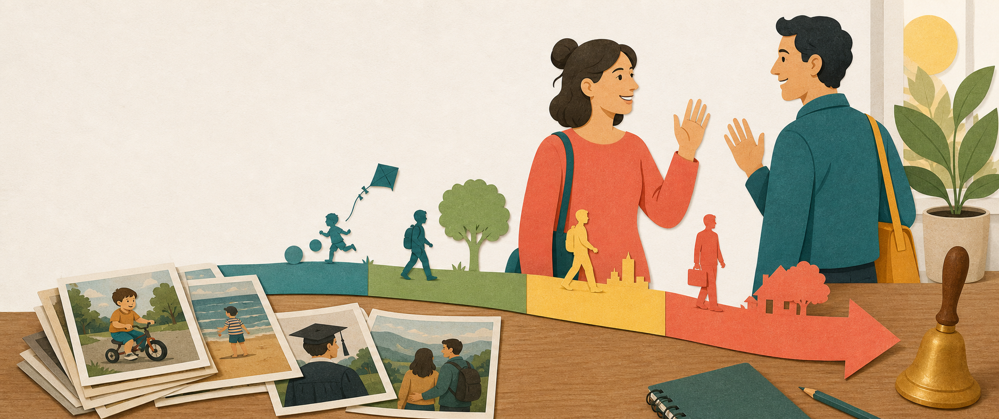

Wortschatz · Set 01
Das weiß ich noch genau!
German vocabulary from your daily glossary
0 of 4 sections
Set 1

Wortschatz · Set 01
German vocabulary from your daily glossary
Set 1
Lektion 01
Automatically keep vocabulary and grammar progress identical on your devices using a private GitHub Gist.
The token is stored only on this device. Create a gist-only token.
Create a private transfer link, then open it on your other device.
Wortschatz · English/German vocabulary trainer
Source: Wortschatz.md.